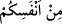

Feleklerdekilerin otağının kandili
Âyetteki hitabın sadece Araplara olma ihtimali de vardır. Bu takdirde mânâsı: “Ey
Araplar! Andolsun size sizin gibi Arap olan ve sizin dilinizi konuşan bir Rasûl
gelmiştir.” Böyle olması onunla ülfet kurmaya daha yakın, inatçılığa daha uzaktır, ortaya
konulan hucceti daha çabuk anlamayı sağlar, çünkü irşad ancak konuşulan dili bilmekle
olur.
Anlatılır ki İranlı, Arap, Türk ve Rum’dan oluşan dört kişi yolda bir dirhem buldular.
Buldukları bu parayla ne yapacakları konusunda anlaşamadılar. Hiçbiri diğerinin
maksadını bilmiyor ve anlamıyordu. Dört dili de bilen birisi onlara kendi dilleriyle
sordu. Anladı ki hepsinin de maksadı bu para ile üzüm almakmış. Bu dilleri bilen kişi,
onlardan parayı alıp üzümü satın aldı. Böylece aralarındaki ihtilaf da ortadan kalktı.
Âyetteki “
” ifâdesi, “fe” harfinin fethası ile “
” şeklinde de
okunmuştur. Bu takdirde mânâsı: “Andolsun size en şerefliniz ve en faziletliniz olan bir
Rasûl gelmiştir” şeklinde olur. “Enfes” kelimesi “nefâset” (çok kıymetli olmak)
kökünden gelmektedir.
Peygamberimiz’in Araplar’ın en şereflisi ve en faziletlisi olmasının izâhı şudur: O,
Külâb oğlu Kusay oğlu Abd-i Menâf oğlu Hâşim oğlu Abdulmuttalib oğlu Abdullah oğlu
Muhammed (s.a.)’dir. Babasının ve annesinin nesebi Külâb’da birleşir. Çünkü annesi
Âmine, Külâb oğlu Zühre oğlu Abd-i Menâf oğlu Vehb’in kızıdır. Güzel hasletleri
yönünden Hâşimoğulları, Arap kabilelerinin Hz. İsmâil (a.s.)’a ulaşan en faziletli
kabilesidir. Külâb’ın nesebi şu şekildedir: Külâb oğlu Mürre oğlu Ka‘b oğlu Lüey oğlu
Gâlib oğlu Fihr.
Neseb âlimleri Kureyş kabilesinin Fihr’den dağılıp yayıldığında ittifak etmiştir.
Dolayısıyla Fihr, Kureyş kabilesinin nesep itibarıyla birleşip toplandığı şahıs
olmaktadır. Fihr’e Kureyş denilmesinin sebebi şudur: Fihr, muhtaç durumda olanların
ihtiyacını soruşturup araştırır ve onların ihtiyaçlarını kendi malıyla karşılardı. Fihr’in
çocukları da hacca gelenlerin ihtiyaçlarını araştırıp soruştururlar ve onlara rifâde
hazırlarlardı. Bu yüzden onlara (“ihtiyaç sahibini araştırıp ihtiyacını karşılayan”
mânâsına gelmek üzere) Kureyş ismi verilmiştir.
Rifade, hac mevsiminde hacılar için hazırlanan ve hacdan ayrılana kadar kendilerine
ikram edilen yemek demektir.
Kureyşliler, Kusay’ın zamanında her hac mevsiminde mallarından bir kısmını çıkarıp
Kusay’a verirlerdi. Kusay da toplanan bu mallarla hacılara yemek hazırlardı. Fakir ve
azığı olmayan hacılar bu yemekten yerdi. Onun bu âdetini oğlu Abd-i Menâf, Abd-i
Menâf’tan sonra oğlu Hâşim, Hâşim’den sonra oğlu Abdulmuttalib, sonra onun oğlu Ebû